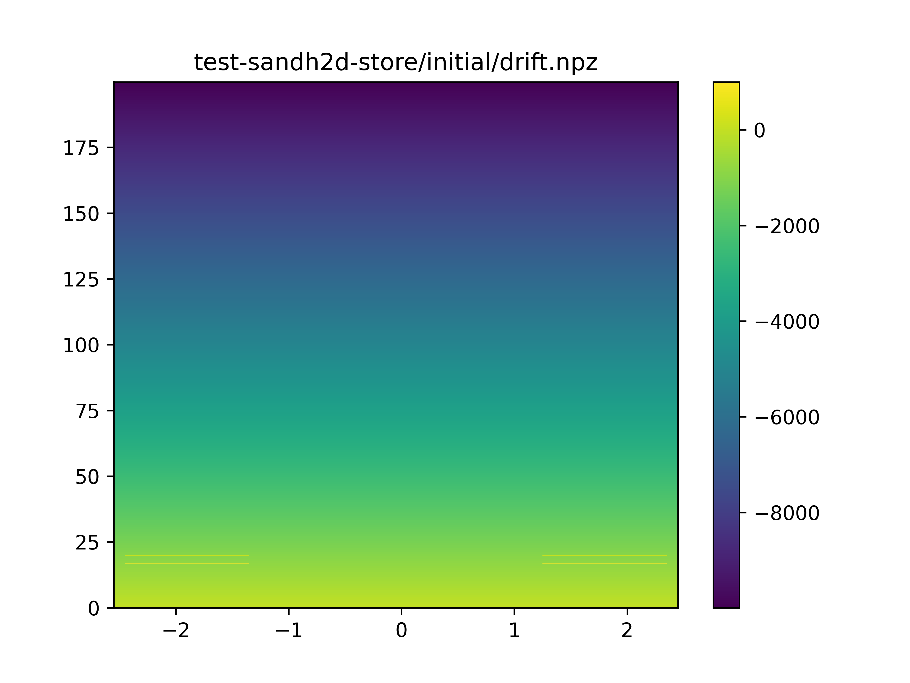
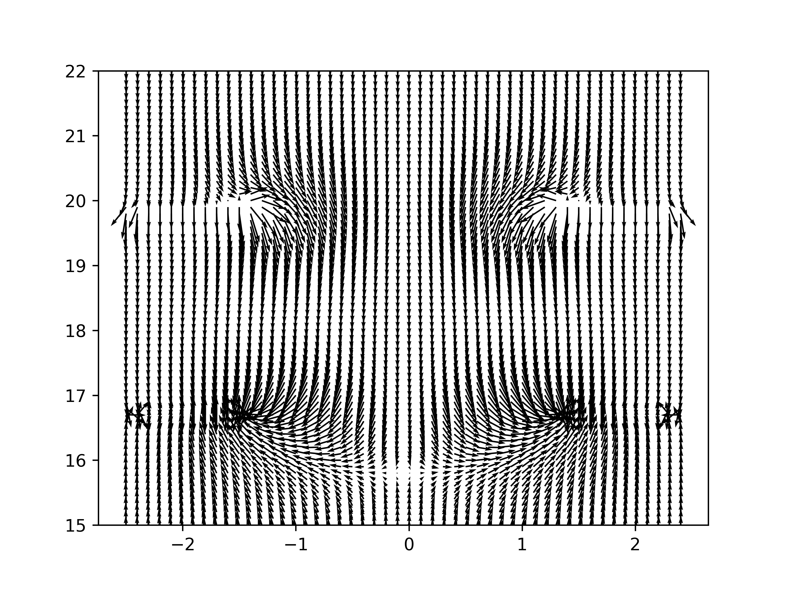

Strip-and-Hole 2D test
Table of Contents
Introduction
The 2D strip-and-hole test provides a full chain response calculation
using pochoir.
Running the chain
The file ./test-sandh2d.sm is a Snakemake "snake file" which will cause the various commands to be run. In a fresh area, an initial one time step is first needed:
❯ snakemake -jall -p -s test/test-sandh2d.sm test-sandh2d-store/gencfg.lst
This will generate a number of JSON configuration files from a single master Jsonnet file ./test-sandh2d.jsonnet. Subsequent edits to the Jsonnet file will cause the JSON configuration files to be rebuilt.
To run the calculation chain itself uses the all target:
❯ snakemake -jall -p -s test/test-sandh2d.sm all
This will populate test-sandh2d-store/ directory with array (.npz) and
other result files and test-sandh2d-plots with visualizations of those
results. A selection of those plots are shown below.
Problem parts
The problem factors into these parts
- domain
- define a spacial grid on which to calculate a field (scalar potential)
- gen
- generate initial (IVA) and boundary (BVA) value arrays for a field
- fdm
- solve Laplace equation given IVA/BVA to produce a field (drift or weighting)
- velo
- for drift field, calculate the vector velocity field
- starts
- define starting points for drift paths
- drift
- solve initial value problem to determine the drift paths through the velocity field
- move
- transfer drift paths to different locations exploiting symmetries
- induce
- calculate induced charge on an electrode through its weighting field
Domains
A domain defines a spatial grid. The pochoir command can generate a
domain but in this example it is created directly from the master
Jsonnet file.
There are two domains in this example. The drift domain is used for calculating the applied electrostatic drift field and the weight domain is used for calculating the two weighting fields.
Generate Initial and Boundary Value Arrays
The initial value array (IVA) defines the a scalar field on every grid point of a domain. It is used as the starting point for the eventual FDM solution.
In principle, most of the grid points may be set to arbitrary values but the closer they can be to the solution the faster FDM will converge.
Most important is the IVA must define values on grid points that are
associated with boundaries. A boundary is any grid point which is set
to True in the boundary value array (BVA). These points should
represent electrodes at fixed potential. Thus the BVA says which grid
points are "on" electrodes and the IVA says what the potential is of
the electrode at that point.
Drift field IVA/BVA
The drift field IVA paints a general gradient between the "cathode" plane at the top of the domain and the "ground" plane at the bottom. It then overlays the actual potential of these two planes as well as segments of the anode strip planes. Note, these latter are nearly the same value as the gradient.
The units for the color axis are Volts and spatial axes are mm. Thus the nominal drift field is 500 V/cm.
Weighting field IVA/BVA
This example has an induction (ind) and collection (col) plane of strips and their IVA/BVA are shown below. No attempt to "pre guess" the general solution values is attempted. The domain for weighting fields are larger because they do not share the transnational/periodic symmetry which the drift field has.
Finite-Difference Method
The finite-difference method (FDM) for solving the Laplace equation is
essentially an iteration of convolutions with a "stencil" on an array.
The array begins as the IVA. Each grid point is set to the average of
its 4 (2D) or 6 (3D) nearest neighbor values. After each convolution
the grid points with value True in the BVA are reset to their values
in the IVA. Boundary conditions (not to be confused with boundary
values!) are set based on whether the edge of the array is considered
fixed or periodic. For this example, the axis 0 (top and bottom
edges) are fixed and axis 1 (sides) are periodic.
The run of FDM is parameterized by:
- epoch
- number of iteration of convolution to perform with no check on precision.
- nepoch
- number of epochs to execute before quiting, regardless of obtained precision
- precision
- the minimum allowed maximum of grid values between iteration.
The iteration will terminate before nepoch iterations are performed if
the maximum change across the domain between two iterations is less
than the given precision. This test is performed at the end of each
epoch iterations. The test itself is costly so the value epoch should
not be too small. OTOH, too large and many unnecessary iterations
will be performed even though the desired precision has been
surpassed.
The drift and two weighting field solutions and the "increment" difference results are:
Velocity field
We take the gradient of the drift field scalar potential to get the E-field. And then given LAr properties for electron transport and a temperature of the LAr we may calculate a vector velocity field. It gives the velocity of a drifting electron for points on the domain grid. We visualize the scalar magnitude field and zoom in on the vector field itself near the central strip hole:
FIXME why is the velocity so low???
Starts, drift, move
The drift paths through the velocity field are then calculated. This
begins by defining a series of starting points ("starts"). These are
ultimately provided in the master Jsonnet configuration file and
placed into the pochoir store. The drift command then solves the
initial value problem. Given an electron on a given start at \(t=0\),
the solution finds the location of the electron at a series of times
\(t=t_i\). These points are taken to lie on 100 ns intervals.
The starts are chosen to span the canonical six impact positions on the lower half of a strip. Given the periodic symmetry of the drift field, the six solutions for the initial value problem can be simply copied by integral number of pitch distances in order to populate a larger domain such required for the next step.
FIXME: make some plot to show this "move" step
Induce
The penultimate step is to calculate the induced current on each electrode in the domain from each step of each path. The induced current is merely the change in charge over one step divided by the time interval of that step. The induced charge is the value of the weighting field at the step multiplied by the charge of the drifting element (taken as having unit charge).
Thus, to get current on the central strip we interpolate the value of the weighting field from its grid measurement points to each step point of each of the six paths. To get current on the off-center strips we make use of the equivalence: a path over strip N induced current on strip 0 as the same path over strip N (given an integral-pitch displacement) induces on strip 0. The application of move operation above provides for this.
FIXME: add plots of current as tick vs impact
Export
The arrays of induced current finally must be exported to Wire-Cell Toolkit JSON format.
FIXME: develop the code to do this…